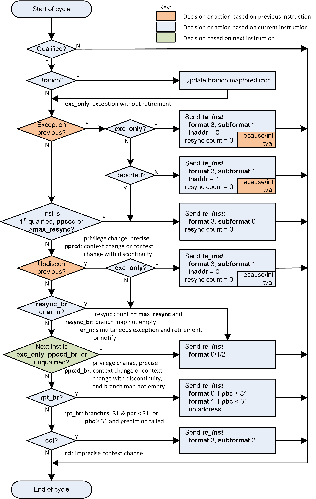

Efficient Trace for RISC-V Example Reference Encoding Algorithm Reference Compressed Branch Trace Algorithm The contents of this chapter are informative only. A reference algorithm for compressed branch trace is given in Instruction delta trace algorithm. In the diagram, the following terms are used: te_inst. The name of the packet type emitted by the encoder (see [packets]); inst. Abbreviation for 'instruction'; trap. Exception or interrupt signalled; updiscon. Uninferable PC discontinuity. This identifies an instruction that causes the program counter to be changed by an amount that cannot be predicted from the source code alone (itype values 8, 10, 12 or 14); Qualified? An instruction that meets the filtering criteria is qualified, and will be traced; Branch? Is the instruction a branch or not (itype values 4 or 5); branch map. A vector where each bit represents the outcome of a branch. A 0 indicates the branch was taken, a 1 indicates that it was not; ppccd. Privilege has changed, or context has changed and needs to be reported precisely or treated as an uninferable PC discontinuity (see [tab:context-type]); ppccd_br. As above, but branch map not empty; ntf. Trace notify trigger (see [tab:debugModuleTriggerSupport]); cci. context change that can be reported imprecisely (see [tab:context-type]); rpt_br. Report branches due to full branch map or misprediction; branches. The number of branches encountered but not yet reported to the decoder; pbc. Correctly predicted branches count (always zero if branch predictor disabled or not present); trep Previous trap already reported with thaddr = 0 because it was preceded by an updiscon or immediately followed by another exception; resync count. A counter used to keep track of when it is necessary to send a synchronization packet (see Resynchronisation); resync2_br. The resync FSM is in state 2 and there are entries in the branch map that have not yet been output (see Resynchronisation). resync3. The resync FSM is in state 3 (see Resynchronisation); Instruction delta trace algorithm shows instruction by instruction behavior, as would be seen in a single-retirement system only. Whilst the core to encoder interface allows the RISC-V hart to provide information on multiple retiring instructions simultaneously, the resultant packet sequence generated by the encoder must be the same as if retiring one instruction at a time. Note that even with a single-retirement system it is possible to retire an instruction and report a trap simultaneously (itype = 1 or 2 and iretire = 1). In this case the flow diagram must be traversed twice, first for the retired instruction, and then for the trap. A 3-stage pipeline within the encoder is assumed, such that the encoder has visibility of the current, previous and next instructions. All packets are generated using information relating to the current instruction. The orange diamonds indicate decisions based on the previous instruction, the green diamond indicates a decision based on the next instruction, and all other diamonds are based on the current instruction. Additionally, the encoder can generate one further packet type, not shown on the diagram for clarity. The support packet (format 3, subformat 3 - see [sec:format33]) is sent when: The encoder is enabled or disabled, or its configuration is changed, to inform the decoder of the operating mode of the encoder; After the final qualified instruction has been traced, to inform the decoder that tracing has stopped; If trace packets are lost (for example if the buffer into which packets are being written fills up), in this situation, the 1st packet loaded into the buffer when space next becomes available must be a support packet. Following this, tracing will resume with a sync packet. Note: if the halted or reset sideband signals are asserted (see [tab:ingress-side-band]) the encoder will behave as if it has received an unqualified instruction (output te_inst reporting the address of the previous instruction, followed by te_support);  Figure 1. Instruction delta trace algorithm Format selection In all cases but two, the packet format is determined only by a 'yes' outcome from the associated decision. When reporting branch information on its own (without an address), the choice between format 1 and format 0, subformat 0 depends on the number of correctly predicted branches (this will be 0 if the predictor is not supported, or is disabled). No packets are generated until there are at least 31 branches to report. Format 1 is used if the outcome of at least one of those 31 branches was not predicted correctly. If all were predicted correctly, nothing is output at this time, and the encoder continues to count correctly predicted branch outcomes. As soon as one of the branch outcomes is not correctly predicted, the encoder will output a format 0, subformat 0 packet. See also [sec:format0]. The choice between formats for the "format 0/1/2" case in the middle of the diagram also needs further explanation. If the number of correctly predicted branches is 31 or more, then format 0, subformat 0 is always used; Else, if the jump target cache is supported and enabled, and the address being reported is in the cache, then normally format 0, subformat 1 will be used, reporting the cache index associated with the address. This will include branch information if there are any branches to report. However, the encoder may chose to output the equivalent format 1 or 2 packet (containing the differential address, with or without branch information) if that will result in a shorter packet (see [sec:format0]); Else, if there are branches to report, format 1 is used, otherwise format 2. Packet formats 0, 1 and 2 are organized so that the address is usually the final field. Minimizing the number of bits required to represent the address reduces the total packet size and significantly improves efficiency. See [packets]. Resynchronisation Per [sec:synchronization], a format 3 synchronisation packet must be output after "a prolonged period of time". The exact mechanism for determining this is not specified, but options might be to count the number of te_inst packets emitted, or the number of clock cycles elapsed, since the previous synchronization message was sent. When the resync is required, the primary objective is to output a format 3 packet, so that the decoder can start tracing from that point without needing any of the history. However, if the decoder is already synced, then it is also required that it can continue to follow the execution path up to and through the format 3 packet seamlessly. As such, before outputting a format 3 packet, it is necessary to output a format 0/1 packet for the preceding instruction if there are any unreported branches (because format 3 does not contain a branch map). There are several supported options for incrementing the resync timer (packets, cycle or instruction half-words), and as such updates to the timer do not necessarily coincide with instruction retirements. A small, independent FSM can be used to ensure the required packets are output in the required order, as follows: State 1: resync_count < max_resync. Transition to State 2 when resync_count >= max_resync State 2: output packet of unreported branches if required, transition to state 3 State 3: output sync packet, reset resync_count and transition to State 1. The format 3 will be sent if the resync timer has been exceeded. On the cycle before this (when the resync timer value has been exactly reached), a format 1 will be generated if the branch map is not empty. Multiple retirement considerations As noted earlier in this section, for a single-retirement system the reference algorithm is applied to each retired instruction. When instructions are retired in blocks, only the first and last instruction in a block need be considered, as all those in between are "uninteresting", and will have no effect on the encoder’s state (their route through Instruction delta trace algorithm does not pass through any of the rectangular boxes). In most cases, either the first or last instruction of a block (but not both) is interesting, meaning that the encoder does not need to generate more than one packet from a block. However, there are a few cases where this is not true, and it is possible that the encoder will need to generate two packets from the same block. For example, the first instruction in a block must generate a packet if it is the first traced instruction. However, if the block also indicates an exception or interrupt (itype= 1 or 2), then the last instruction in the block must also generate a packet. As generating multiple packets per cycle would significatly complicate the encoder, and as situations such as this will only occur infrequently, some elastic buffering in the encoder is the preferred approach. This will allow subsequent blocks to be queued whilst the encoder generates two successive packets from a block. The encoder can drain the elastic buffer any time there is a cycle when the hart doesn’t report anything, or if there is a block with itype = 0 (which is uninteresting to the encoder). There are pathological cases where consecutive blocks could require packets to be generated from both first and last instructions, but elastic buffering is only required if the blocks are also input on consecutive cycles. In practice there are very few cases where this can occur. The worst so far identified case is a variation on the example above, where the exception is an ecall, and that in turn encounters some other form of exception or interrupt in the first few instructions of the trap handler: Block 1: itype = 1 (ecall), iretires > 1. Generate packet from first instruction (first traced), and last instruction (last before ecall); Block 2: itype = 1 or 2 (some other exception or interrupt), iretires > 0. Generate packet from first instruction (ecall trap handler), and last instruction (last before other exception or interrupt); Block 3: Generate packet from first instruction (other exception or interrupt trap handler) Because the ecall is known to the hart’s fetch unit and can be predicted, it may be possible for block 2 to occur the cycle after block 1. However, it is reasonable to assume that the other exception or interrupt will not be predictable, and as a result there will be several cycles between blocks 2 and 3, which will allow the encoder to 'catch up'. It is recommended that encoders implement sufficient elastic buffering to handle this case, and if for some reason the elastic buffer overflows, it should issue a support packet indicating trace lost. Data Trace Payload Format Trace Discovery and Configuration